.jpeg)
Proyectos de vida y desarrollo de capacidades
Fortalecemos habilidades socioemocionales, personales y de liderazgo para impulsar la autonomía, la toma de decisiones y la construcción de proyectos de vida.

Diseñamos soluciones para transformar capacidades en oportunidades y oportunidades en bienestar.
Servicios MATE
En MATE, entendemos la longevidad desde una perspectiva de curso de vida y por ello acompañamos a las personas en cada etapa, fortaleciendo sus capacidades, bienestar, autonomía y participación para que puedan vivir mejor, durante más tiempo y con mayores oportunidades. Para llevarlo a cabo diseñamos soluciones que conectan bienestar, cuidado, autonomía y protección desde la niñez y la juventud hasta las etapas más avanzadas de la vida.
¿Qué hacemos?
Diseñamos estrategias, programas e investigaciones que fortalecen las capacidades de niñas, niños, adolescentes y jóvenes para ampliar sus oportunidades educativas, laborales, sociales y comunitarias. Trabajamos con enfoque de derechos, diferencial y territorial, promoviendo participación significativa y soluciones adaptadas a las realidades y trayectorias de cada población.
Fortalecemos habilidades socioemocionales, personales y de liderazgo para impulsar la autonomía, la toma de decisiones y la construcción de proyectos de vida.
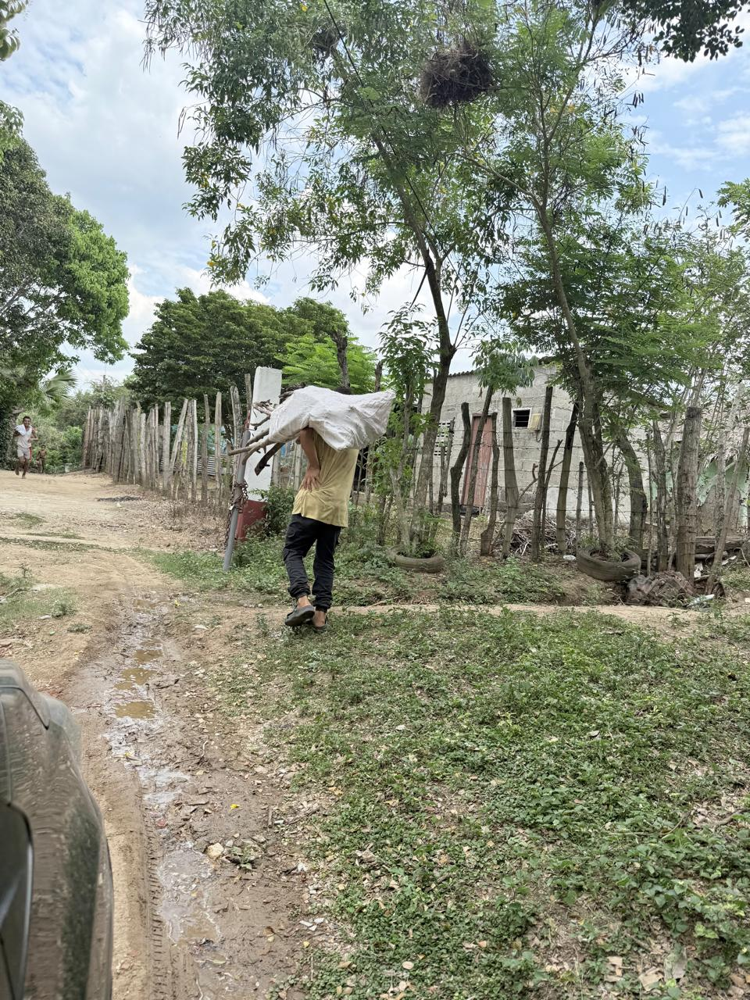
Diseñamos rutas que conectan formación, habilidades y oportunidades de empleo, emprendimiento y generación de ingresos.
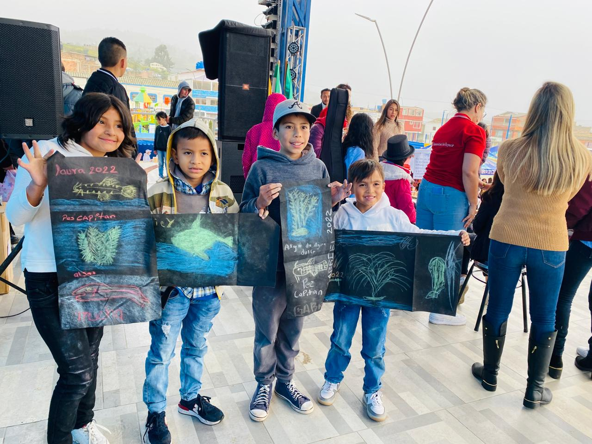
Desarrollamos metodologías para fortalecer el ejercicio de derechos, la participación significativa, el liderazgo y la incidencia de niñas, niños, adolescentes y jóvenes.
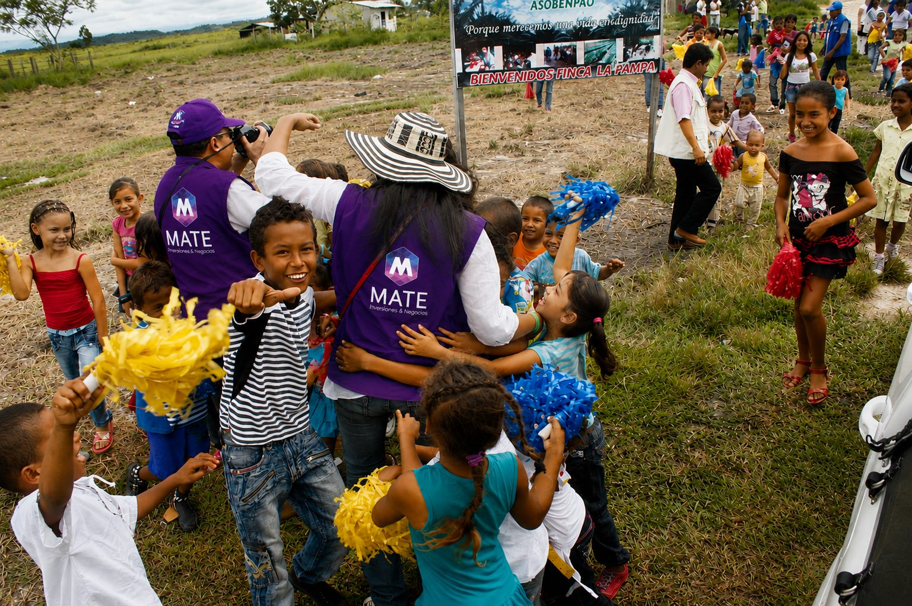
Generamos evidencia para la toma de decisiones sobre las trayectorias juveniles, sus barreras y oportunidades, incluyendo educación, trabajo, permanencia y migración.
Investigación para comprender el ejercicio de derechos y fortalecer entornos protectores de niñas, niños y adolescentes, integrando evidencia cuantitativa y cualitativa desde las personas, las familias, las comunidades, las instituciones educativas, las organizaciones sociales y las autoridades locales.
Investigación sobre los factores que inciden en las decisiones de permanencia y migración de jóvenes, orientada a generar evidencia para políticas y estrategias de desarrollo territorial.
Educación ambiental y participación ciudadana con niñas, niños, adolescentes, jóvenes y comunidades para fortalecer la conservación y apropiación del territorio.
Conoce másFortalecimiento del conocimiento, ejercicio y protección de los derechos de niñas, niños y adolescentes mediante formación, participación comunitaria y articulación institucional.
Conoce másDiseñamos soluciones orientadas a fortalecer la capacidad funcional, el bienestar, la autonomía y la calidad de vida de las personas desde una perspectiva de longevidad saludable, nueva longevidad, prevención de la cronicidad, manejo de la multimorbilidad, nuevos modelos de cuidado y comunidades cuidadoras.
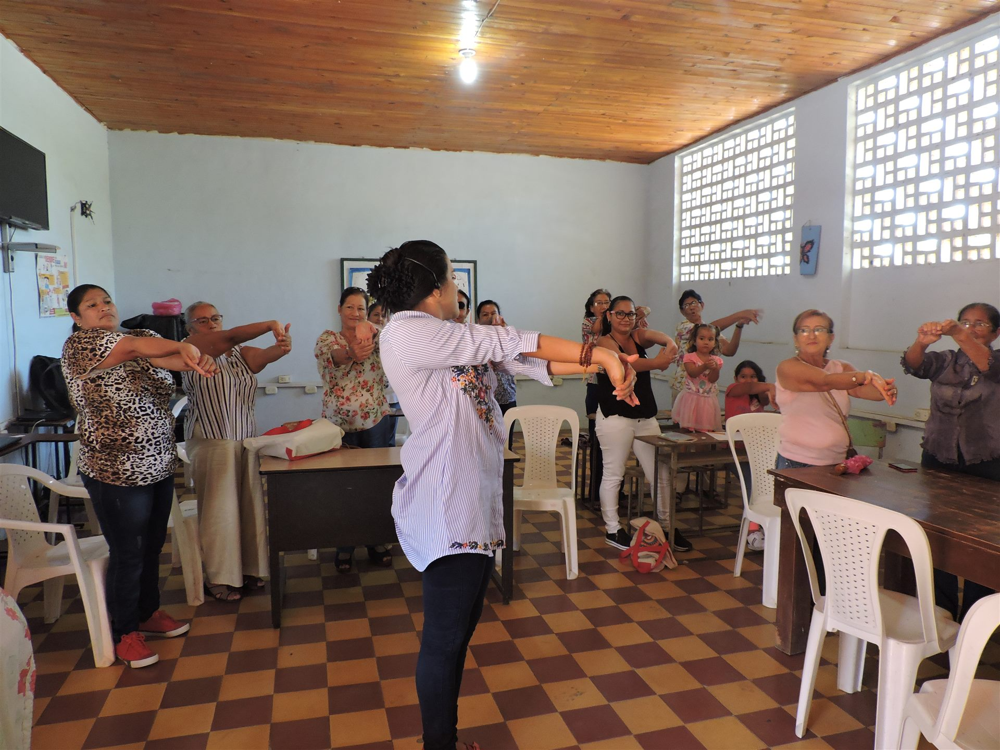
Diseñamos modelos integrales de cuidado que fortalecen la autonomía, la capacidad funcional y la calidad de vida, articulando servicios, redes de apoyo, cuidadores y entornos.
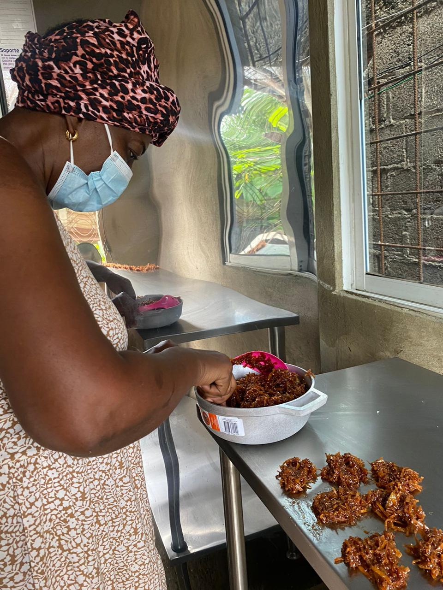
Desarrollamos estrategias para promover un envejecimiento saludable y una nueva longevidad, con énfasis en prevención, bienestar, autonomía, participación y proyectos de vida.
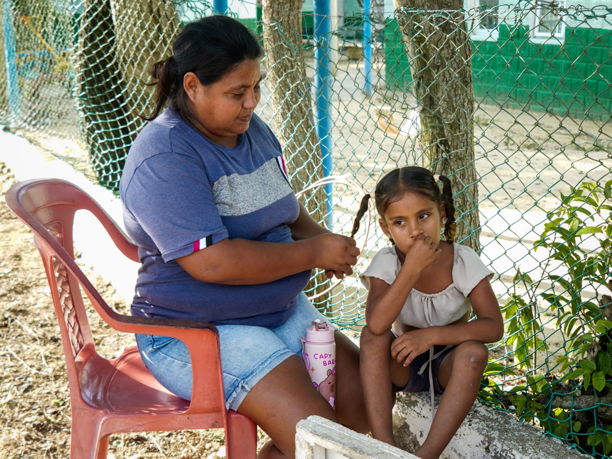
Diseñamos comunidades y sistemas de cuidado corresponsables que distribuyen las responsabilidades entre personas, familias, organizaciones, Estado y territorios.
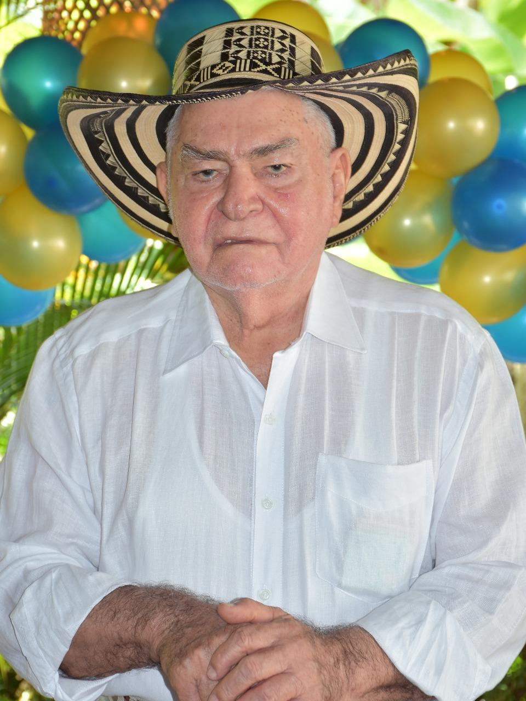
Diseñamos programas para prevenir la cronicidad y fortalecer el manejo integral de condiciones de larga duración y multimorbilidad, promoviendo funcionalidad, autonomía y bienestar.
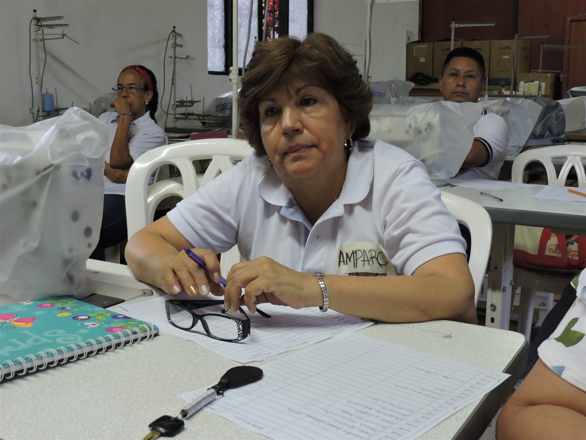
Diseñamos e implementamos servicios, programas e intervenciones sociales que responden a las necesidades de las personas a lo largo del proceso de envejecimiento, fortaleciendo inclusión, participación y calidad de vida.
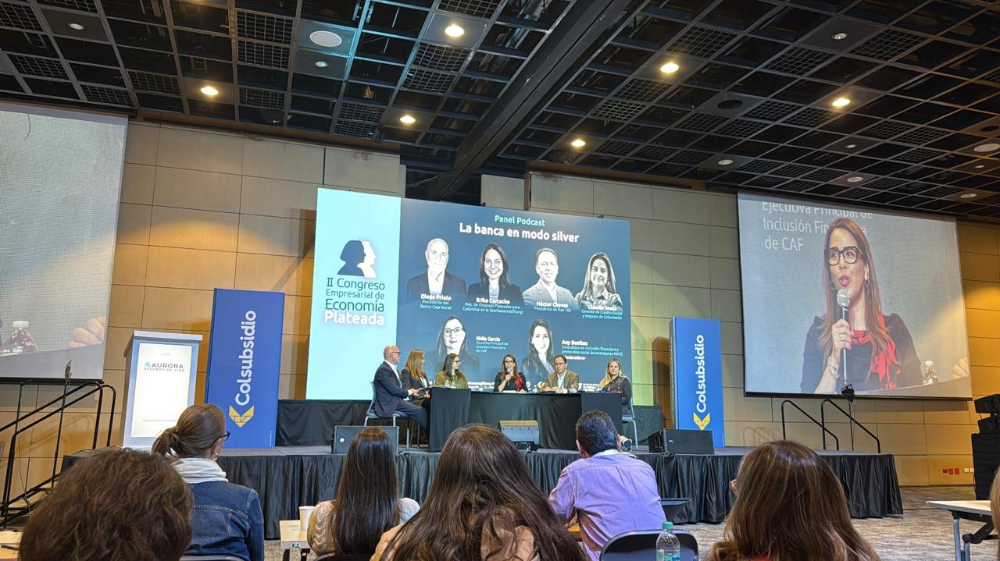
Servicios MATE
Diseñamos soluciones de emprendimiento 50+, empleabilidad senior, segunda carrera, mentoría e innovación, reconociendo la experiencia, capacidades y aspiraciones de las personas en diferentes momentos de su trayectoria laboral y productiva.
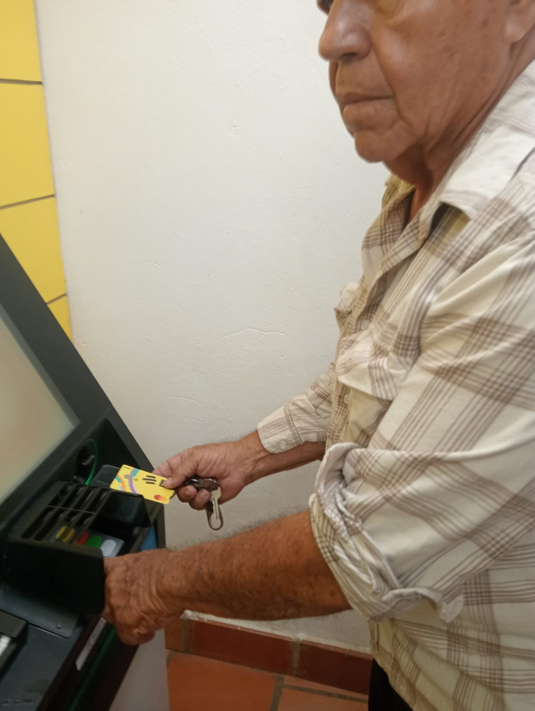
Servicios MATE
Diseñamos estrategias de ahorro, inclusión y protección financiera, educación previsional y preparación para el retiro, incorporando ciencias del comportamiento para comprender y facilitar decisiones financieras a lo largo de la vida.
MATE + KOGNITIVO + ZELVA
A través de la Unión Temporal IMPACTO 50+, integrada por MATE SAS, KOGNITIVO SAS y ZELVA SAS, acompañaremos a entidades financieras para comprender mejor las necesidades, comportamientos y oportunidades de las personas 50+ y convertir ese conocimiento en nuevas soluciones.
Participamos en espacios de conocimiento y articulación sobre economía de la longevidad, finanzas plateadas y los desafíos de vivir más años.
Integramos conocimiento especializado en geriatría, salud pública, cuidado, bienestar, economía de la longevidad, inclusión financiera e innovación haciendo posible una mirada interdisciplinaria y técnica sobre la longevidad.

Líder de Longevidad Saludable
Médico geriatra de la Universidad Nacional de Colombia, con más de 15 años de experiencia en el diseño de políticas públicas, programas y proyectos de longevidad saludable. Expresidente de la Asociación Colombiana de Gerontología y Geriatría y actual presidente del COMLAT.

Líder de Cuidado para una Nueva Longevidad
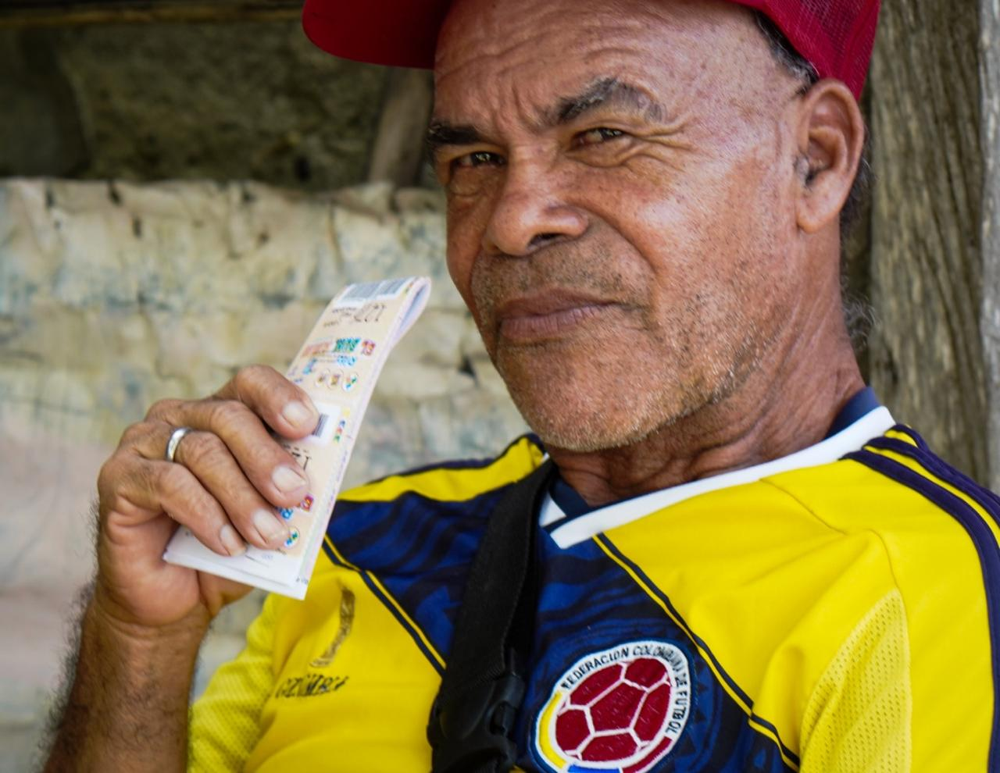
Servicios MATE
Comprender el curso de vida nos permite anticipar necesidades, fortalecer capacidades y diseñar mejores oportunidades para el presente y el futuro.
Hablemos de longevidadPonemos capacidades transversales al servicio de cada proyecto para diseñar, implementar, medir y escalar soluciones.
Diseñamos ecosistemas, modelos y alianzas que conectan actores, fortalecen organizaciones y convierten oportunidades en soluciones sostenibles.
Innovación social · Ecosistemas · Desarrollo de negocios · Gobernanza · Articulación
Generamos evidencia para comprender personas y territorios, orientar decisiones y mejorar resultados.
Investigación · Analítica de datos · MEL · Ciencias del comportamiento · Evaluación
Integramos las dimensiones económica, social y ambiental para generar valor sostenible y resultados medibles.
Sostenibilidad · Cadenas de valor · Economía circular · Impacto · Desarrollo territorial
Complementamos nuestras intervenciones con la gestión de bienes, equipos, dotaciones, tecnología y logística cuando los proyectos lo requieren.
Suministro · Dotaciones · Tecnología · Logística · Soporte
Servicios MATE
Diseñamos e implementamos soluciones para que personas, hogares, emprendimientos, empresas y organizaciones fortalezcan sus capacidades, generen ingresos, tomen mejores decisiones y accedan a oportunidades económicas y financieras de manera sostenible.
Integramos inclusión financiera, desarrollo empresarial, acceso a mercados, tecnología, datos y ciencias del comportamiento, adaptando cada solución a las capacidades, barreras y oportunidades de las personas y los territorios.
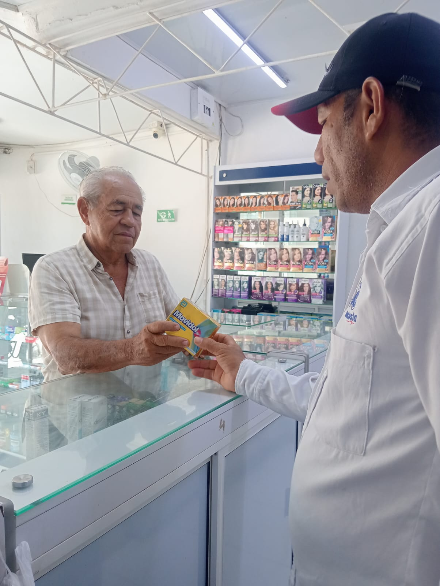
¿Qué hacemos?
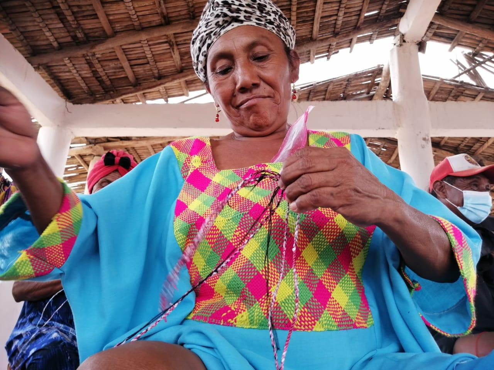
Diseñamos soluciones que amplían el acceso, uso y aprovechamiento efectivo de ahorro, crédito, seguros, pagos, inversión y otros servicios financieros, conectándolos con las necesidades y capacidades reales de las personas y los negocios.
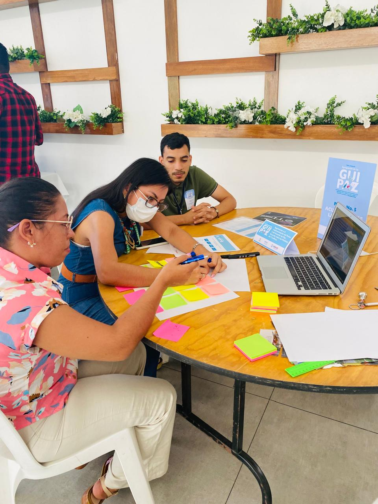
Desarrollamos metodologías presenciales, digitales e híbridas para fortalecer conocimientos, comportamientos y decisiones sobre ingresos, ahorro, crédito, endeudamiento, protección, inversión y bienestar financiero.
Diseñamos rutas que fortalecen capacidades, ingresos, activos productivos y autonomía económica, especialmente para poblaciones que enfrentan mayores barreras de acceso a oportunidades.
EMPRESA MATE
Nuestro modelo de acompañamiento empresarial parte de una premisa: cada empresa tiene capacidades, desafíos y oportunidades diferentes; por eso, no todas necesitan la misma ruta.
A través del Índice de Capacidades Empresariales, diagnosticamos integralmente el negocio, identificamos fortalezas y brechas y construimos una ruta personalizada de fortalecimiento.
Integramos registro financiero permanente, asistencia modular, formación, herramientas de gestión, mentoría y consejo asesor, ciencias del comportamiento y conexión con redes y mercados, acompañando a las empresas desde el diagnóstico hasta la implementación y medición de resultados.
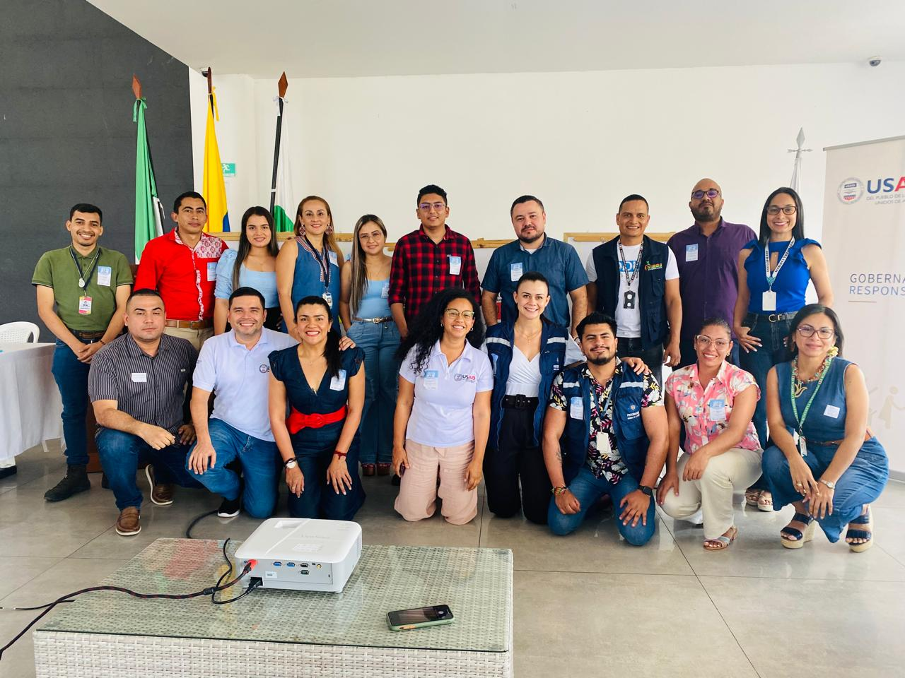
Conectamos capacidades productivas y empresariales con financiación, activos, clientes, proveedores, canales comerciales, encadenamientos y nuevos mercados, fortaleciendo las condiciones para crecer.
Diseñamos soluciones que reconocen las barreras y oportunidades asociadas al género, cuidado, territorio, edad, pertenencia étnica, discapacidad y otras condiciones, incorporándolas desde el diseño hasta la evaluación.
Impulsamos capacidades de gestión, gobernanza, planificación, articulación, sostenibilidad y toma de decisiones de asociaciones, organizaciones e instituciones.
Generamos evidencia mediante diagnósticos, segmentación, análisis de datos, pilotos, monitoreo y evaluación para comprender qué funciona, para quién, en qué contextos y bajo qué condiciones.
Integramos herramientas digitales, analítica de datos e inteligencia artificial para ampliar el acceso al conocimiento, personalizar rutas de acompañamiento, facilitar la gestión y desarrollar soluciones escalables adaptadas a diferentes personas, empresas y contextos.
Nuestra experiencia nos permite adaptar estas soluciones a mujeres, jóvenes, población rural, comunidades étnicas, víctimas del conflicto, personas 50+, emprendedores, mipymes, asociaciones productivas, organizaciones comunitarias e instituciones financieras y de desarrollo.
Trabajamos desde el territorio, pero diseñamos soluciones con capacidad de adaptación, escalamiento y medición de resultados.